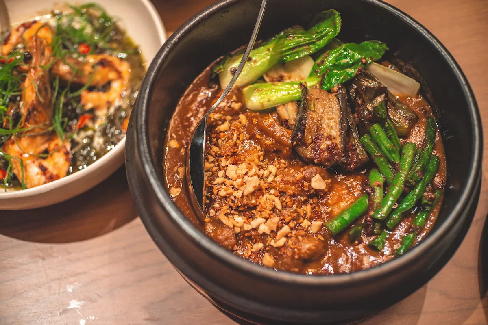

Featured Dishes
Explore Filipino Food by Regions
Learn More About Filipino Food
Filipino cuisine is a rich tapestry of flavors, influenced by various cultures and regions. Each dish tells a story of the Philippines' history, traditions, and the diverse communities that call this archipelago home.
From the savory adobo to the sweet halo-halo, Filipino food offers a unique culinary experience that reflects the country's vibrant culture and heritage.